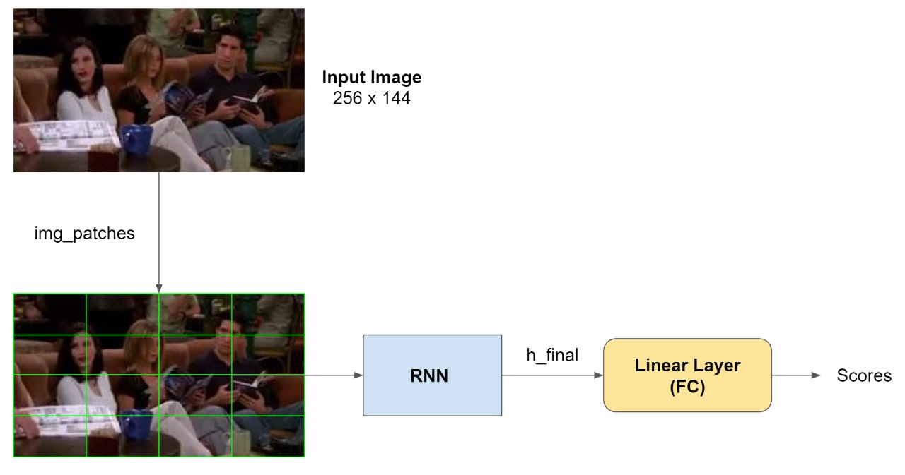

Baseline¶
Description¶
In the below implementation, we have mapped the multi-label image classification task to that of a language modelling task. To mimic words and sets of words, the input images are cut up into patches, where each patch represents a word in the set. Each patch of the image is the word and the entire image is synonymous with a sentence. We pass each image patch through the model, retaining the encoding between the patches of the sentence. The final encoding, we take to be the representation of the image and pass it to the fully connected layer whose outputs are interpreted as classification scores.
Architecture¶

Implementation¶
Basic outline of the section:
Environment setup
Model definition
Train and Validate functions
Set hyperparameters
Data Loading
Training
Testing
Evaluation
1. Environment Setup¶
import sys
sys.path.append("..")
import os
import torch
import torch.nn as nn
import torch.nn.functional as F
import torchvision
import cv2
import numpy as np
import pandas as pd
import matplotlib.pyplot as plt
import torchvision.transforms as transforms
from torch.utils.data import Dataset
from torch.utils.data import DataLoader
import torch.optim as optim
from src.dataset import *
from src.utils import *
from einops import rearrange
2. Model definition¶
The model architecture is as defined below:
class ImageRNN(nn.Module):
def __init__(self, batch_size, n_steps, n_inputs, n_neurons, n_outputs):
super(ImageRNN, self).__init__()
self.n_neurons = n_neurons
self.batch_size = batch_size
self.n_steps = n_steps
self.n_inputs = n_inputs
self.n_outputs = n_outputs
self.layer1 = nn.RNN(self.n_inputs, self.n_neurons)
self.layer2 = nn.Linear(self.n_neurons, self.n_outputs)
def init_hidden(self,):
return torch.zeros(1, self.batch_size, self.n_neurons)
def forward(self, X, h_init):
# Transforms X to dimensions: n_steps X batch_size X n_inputs
X = X.permute(1, 0, 2)
h_seq , h_final = self.layer1(X , h_init)
score_seq = self.layer2(h_final)
return score_seq.view(-1, self.n_outputs), h_final #out.view(-1, self.n_outputs) # batch_size X n_output
3. Train and Validate Functions¶
def train(model, dataloader, optimizer, criterion, train_data, device):
model.train()
counter = 0
running_acc = 0.0
running_loss = 0.0
running_error = 0.0
h = torch.zeros(1, model.batch_size, model.n_neurons)
h = h.to(device)
for i, data in enumerate(dataloader):
optimizer.zero_grad()
counter += 1
# Get image patches from the input to feed to the RNN.
inputs, labels = data.values()
img_patches = rearrange(
inputs.view(model.batch_size, 3, 144, 256),
"b c (patch_x x) (patch_y y) -> b (x y) (patch_x patch_y c)",
patch_x=PATCH_SIZE,
patch_y=PATCH_SIZE,
)
img_patches = img_patches.to(device)
labels = labels.to(device)
h = h.detach()
h = h.requires_grad_()
# forward + backward + optimize
outputs, h = model(img_patches, h)
outputs = torch.sigmoid(outputs).to(device)
loss = criterion(outputs, labels)
loss.backward()
optimizer.step()
running_loss += loss.detach().item()
running_error += get_error(outputs.detach(), labels, model.batch_size)
running_acc += get_accuracy(outputs.detach(), labels, model.batch_size)
total_loss = running_loss / counter
total_error = running_error / counter
return total_loss, total_error
def validate(model, dataloader, criterion, val_data, device):
model.eval()
counter = 0
running_loss = 0.0
running_error = 0.0
h = torch.zeros(1, model.batch_size, model.n_neurons)
h = h.to(device)
with torch.no_grad():
for i, data in enumerate(dataloader):
counter += 1
# Get image patches from the input to feed to the RNN.
inputs, labels = data.values()
img_patches = rearrange(
inputs.view(model.batch_size, 3, 144, 256),
"b c (patch_x x) (patch_y y) -> b (x y) (patch_x patch_y c)",
patch_x=PATCH_SIZE,
patch_y=PATCH_SIZE,
)
img_patches = img_patches.to(device)
labels = labels.to(device)
outputs, h = model(img_patches, h)
# Apply sigmoid activation to get all the outputs between 0 and 1
outputs = torch.sigmoid(outputs)
loss = criterion(outputs, labels)
running_loss += loss.item()
running_error += get_error(outputs, labels, BATCH_SIZE)
total_loss = running_loss / counter
total_error = running_error / counter
return total_loss, total_error
4. Set hyperparameters¶
N_STEPS = 144
N_INPUTS = 768
N_NEURONS = 150
N_OUTPUTS = 6
N_EPOCHS = 20
BATCH_SIZE = 1
LR = 0.1
PATCH_SIZE = 16
device = torch.device("cuda" if torch.cuda.is_available() else "cpu")
model = ImageRNN(BATCH_SIZE, N_STEPS, N_INPUTS, N_NEURONS, N_OUTPUTS)
model = model.to(device)
display_num_param(model)
print(model)
lr = 0.0001
optimizer = optim.Adam(model.parameters(), lr=lr)
criterion = nn.BCELoss()
There are 138906 (0.14 million) parameters in this neural network
ImageRNN(
(layer1): RNN(768, 150)
(layer2): Linear(in_features=150, out_features=6, bias=True)
)
5. Data Loading¶
train_data = ImageDataset(train=True)
valid_data = ImageDataset(train=False)
train_loader = DataLoader(train_data, batch_size=BATCH_SIZE, shuffle=True)
valid_loader = DataLoader(valid_data, batch_size=BATCH_SIZE, shuffle=False)
Number of training images: 2065
Number of test images: 365
6. Training¶
train_loss = []
valid_loss = []
for epoch in range(N_EPOCHS):
train_epoch_loss, train_epoch_error = train(model, train_loader, optimizer, criterion, train_data, device)
valid_epoch_loss, valid_epoch_error = validate(model, valid_loader, criterion, valid_data, device)
train_loss.append(train_epoch_loss)
valid_loss.append(valid_epoch_loss)
print(
"Epoch: %d | Train Loss: %.4f | Train Error: %.2f Val Loss: %.4f | Val Error: %.2f\n"
% (epoch, train_epoch_loss, train_epoch_error, valid_epoch_loss, valid_epoch_error)
)
Epoch: 0 | Train Loss: 0.3770 | Train Error: 15.99 Val Loss: 0.6321 | Val Error: 28.08
Epoch: 1 | Train Loss: 0.3184 | Train Error: 12.62 Val Loss: 0.5896 | Val Error: 26.44
Epoch: 2 | Train Loss: 0.2772 | Train Error: 10.92 Val Loss: 0.6551 | Val Error: 27.40
Epoch: 3 | Train Loss: 0.2461 | Train Error: 9.49 Val Loss: 0.7248 | Val Error: 30.37
Epoch: 4 | Train Loss: 0.2322 | Train Error: 8.87 Val Loss: 0.6678 | Val Error: 27.12
Epoch: 5 | Train Loss: 0.1986 | Train Error: 7.16 Val Loss: 0.6952 | Val Error: 26.30
Epoch: 6 | Train Loss: 0.1857 | Train Error: 6.76 Val Loss: 0.9062 | Val Error: 31.78
Epoch: 7 | Train Loss: 0.1717 | Train Error: 6.19 Val Loss: 0.7693 | Val Error: 27.35
Epoch: 8 | Train Loss: 0.1585 | Train Error: 5.63 Val Loss: 0.7827 | Val Error: 28.77
Epoch: 9 | Train Loss: 0.1451 | Train Error: 4.88 Val Loss: 0.9811 | Val Error: 33.01
Epoch: 10 | Train Loss: 0.1376 | Train Error: 4.62 Val Loss: 0.8897 | Val Error: 28.95
Epoch: 11 | Train Loss: 0.1325 | Train Error: 4.40 Val Loss: 0.8958 | Val Error: 29.86
Epoch: 12 | Train Loss: 0.1141 | Train Error: 3.81 Val Loss: 0.9949 | Val Error: 29.82
Epoch: 13 | Train Loss: 0.1031 | Train Error: 3.45 Val Loss: 1.0955 | Val Error: 29.41
Epoch: 14 | Train Loss: 0.0968 | Train Error: 3.27 Val Loss: 0.9575 | Val Error: 28.72
Epoch: 15 | Train Loss: 0.0920 | Train Error: 3.02 Val Loss: 1.0238 | Val Error: 29.04
Epoch: 16 | Train Loss: 0.0834 | Train Error: 2.68 Val Loss: 1.1107 | Val Error: 31.55
Epoch: 17 | Train Loss: 0.0765 | Train Error: 2.45 Val Loss: 0.9926 | Val Error: 28.31
Epoch: 18 | Train Loss: 0.0727 | Train Error: 2.43 Val Loss: 0.9497 | Val Error: 26.03
Epoch: 19 | Train Loss: 0.0631 | Train Error: 1.96 Val Loss: 1.1078 | Val Error: 28.95
7. Testing¶
actors = np.array(CLASSES)
print('actors: ', actors)
test_data = ImageDataset(train=False)
print(test_data[0]['image'].shape, test_data[0]['label'].shape)
test_loader = DataLoader(test_data, batch_size=1, shuffle=True)
actors: ['chandler' 'joey' 'monica' 'phoebe' 'rachel' 'ross']
Number of test images: 365
torch.Size([3, 144, 256]) torch.Size([6])
model.eval()
running_error = 0.0
running_acc = 0.0
output_list = []
target_list = []
for counter, data in enumerate(test_loader):
h = torch.zeros(1, BATCH_SIZE, model.n_neurons)
h = h.to(device)
inputs, labels = data.values()
target_indices = [i for i in range(len(labels[0])) if labels[0][i] == 1]
img_patches = rearrange(
inputs.view(BATCH_SIZE, 3, 144, 256),
"b c (patch_x x) (patch_y y) -> b (x y) (patch_x patch_y c)",
patch_x=PATCH_SIZE,
patch_y=PATCH_SIZE,
)
img_patches = img_patches.to(device)
labels = labels.to(device)
h = h.detach()
h = h.requires_grad_()
outputs, h = model(img_patches, h)
outputs = torch.sigmoid(outputs)
outputs = outputs.detach().cpu()
lab = torch.where(outputs>=0.5,1,0)[0]
pred = torch.where(lab==1)
running_error += get_error(outputs.to(device), labels, 1)
running_acc += get_accuracy(outputs.to(device), labels, 1)
output_list.append(outputs.numpy())
target_list.append(labels.cpu().numpy())
string_predicted = ""
string_actual = ""
for i in range(len(pred)):
string_predicted += f"{actors[pred[i]]} "
for i in range(len(target_indices)):
string_actual += f"{actors[target_indices[i]]} "
if 10< counter < 20:
# print(image)
image = inputs.squeeze(0)
image = image.detach().cpu().numpy()
image = np.transpose(image, (1, 2, 0))
plt.imshow(image)
plt.axis("off")
plt.title(f"PREDICTED: {string_predicted}\nACTUAL: {string_actual}")
plt.show()
test_error = running_error / counter
print(f"Test Error: ", test_error)
out = np.array(output_list).squeeze(axis=1)
tar = np.array(target_list).squeeze(axis=1)
Test Error: 29.166667306652435
7. Evaluation¶
f1 = get_f1_score(tar, out)
precision = get_precision_score(tar, out)
recall = get_recall_score(tar, out)
print("F1 score: ", f1)
print('Precision: ', precision)
print('Recall: ', recall)
F1 score: 0.39210697977821257
Precision: 0.4208675799086758
Recall: 0.41292237442922375
C:\Users\Rishabh\anaconda3\envs\deeplearn_course\lib\site-packages\sklearn\metrics\_classification.py:1248: UndefinedMetricWarning: Precision is ill-defined and being set to 0.0 in samples with no predicted labels. Use `zero_division` parameter to control this behavior.
_warn_prf(average, modifier, msg_start, len(result))
Results¶
For an RNN with three layers of encoding, the following are the results:
Training results at the end of 20 epochs:
Train Loss: 0.0631
Train Error: 1.96
Val Loss: 1.1078
Val Error: 28.95
Test Results:
Test Error: 29.167
F1 score: 0.3921
Precision: 0.4209
Recall: 0.4129
Discussion¶
The network is performing decently well, however, the class ‘Rachel’ is predicted more frequently than the rest. The test error witht his network is still quite high.
Possible reasons for this could be:
Dataset size – RNNs require a lot more data to make better predictions.
Class distribution - Overfitting to frequently occuring classes. As we noticed in the EDA, the number of images for some of the characters is not proportionate. This could lead to a bias to the frequently occurring classes.